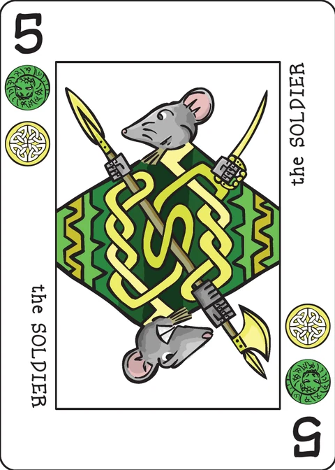

Myrmex
an olde style solitaire game for the Decktet
| Designed by | Greg James |
|---|---|
| Players | 1 |
| Length | 20 mins |
| Extra material | Two Decktetts (a modified double Decktet) |
An ant colony is a place of feverish activity, where workers endlessly toil for the greater good of the superorganism. You are a worker ant, constantly moving detritus and foodstuffs from chamber to chamber. The problem is that other workers are bringing in more goods faster than you can sort out the old stuff! At the end of the day, the best that you can hope for is a chance to do it all over again tomorrow.
Object of the game
Organize all of the cards into 6 piles that share a single suit and are in descending rank order from Crown to Ace.
Components
A modified double Decktet
Preparing the deck
For the basic “minor worker” game, form a 60 card deck comprised of:
- 6 Aces, one of each suit
- 6 Crowns, one of each suit
- 2 copies of each numbered card (48 total)
For the “Major Worker” game, add two copies of each of these 3 Pawns: The Borderland, The Harvest and The Watchman.
For the “Queen Level” game, in addition to adding the Pawns, also add two copies of each of these 3 Courts: The Consul, The Island and The Window.
Setup
Form a tableau by dealing out a row of 8 cards face down near the top of your playing surface. Deal out more cards so that each pile has 4 cards. The top cards of the piles will be face up — these piles are the materials already in the ant colony which need to be sorted into their 6 proper chambers. The remaining cards are incoming materials and comprise the draw pile. These are placed face down nearby to be used later. It is time to get to work!
Game Play
The top card on each pile is available to play. Cards follow their usual rank order Crown, 9 … 2, Ace. A card may be moved onto another pile provided that it is of immediate lower rank than the destination card. e.g. Any 7 may be moved onto any 8. Groups of cards may be moved in this fashion provided that they are in descending rank order and share a common suit. e.g. The Castle 7 suns/crowns, Penitent 6 suns/daemons and Discovery 5 suns/waves may be moved onto any 8 as a 7-6-5 group of Suns.
When the last face up card of a foundation pile is moved, the top card of that pile is then flipped face up and is available to play. When the final card of a pile is moved, any available card or group may be moved to fill the void. When you feel that you have exhausted all of the useful moves or are satisfied with your arrangement of the tableau, restock the tableau from the draw pile by flipping one new card face up onto each pile. There will be 3 such restocking deals of 8 cards in the game and a final partial restocking deal of 4 cards to the first 4 slots.
When you complete a suit sequence from Crown to Ace with no gaps, that entire sequence is removed from play and is placed above the tableau. This represents one chamber of the colony which is safely filled with the correct material.
The game ends when you have no more moves available and the draw pile has been exhausted.
Evaluating your game
If you failed to complete a single suit sequence, this means that because of your feeble efforts there has been a massive cave in. Nobody bothers to dig you out. A total loss.
If you completed 1-5 sequences, you are clearly not up for the task at hand, despite exerting considerable effort. You are evicted from the colony and are devoured by a spider in the garden. A partial win.
If you completed all 6 sequences, your day was a success. You may now enter the Queen’s chamber and start mucking it out. A full victory!
Evaluating your win
- Easy win — 15 minutes or less
- Working up a sweat — win in 16-25 minutes
- Brain Buster — win in 25+ minutes
Easier variant
Larval Stage — If you are having trouble getting going, you may try this easier variant: At setup, deal out all of the initial tableau cards face up and slightly splayed down so that you may see each card in the pile, then play regularly.
Tougher variants
While it is true that not every hand of Myrmex can be won, it is also true that as your skill at the game increases, your winning percentage will markedly increase. When this happens, you may wish to try a tougher version of the game.
Minor worker level — the basic game as described above.
Major worker level — Major workers in an ant colony are made for bigger things. Players at this level add in the Pawns to the start deck. Only 6 Pawns are required and I recommend removing both Lightkeepers. At setup, the first six piles will have 5 cards in them. The final two piles in the row will have 4 cards as in the basic game. Deal all of the initial cards face up and splayed so that their values and suits are visible. Pawns are ranked between Crowns and 9s as usual and the regular rules of the game apply.
Queen level — The Queen ant can mobilize her colony to defend against almost any danger. Players at this level add in both the Pawns and Courts. Before you do this, remove both Lightkeepers and both Rites to form your deck. When dealing out the initial tableau, deal out 32 cards as in the Minor Worker game, but face up and splayed so that their values and suits are visible. Courts are ranked between Crowns and Pawns as usual and the regular rules of the game apply. Good luck!
For an even greater challenge, you may play the Major Worker and Queen level games with closed stacks at initial setup as in the Minor Worker game.
Further Reading
If you have an interest in myrmecology and wish to read up on these fascinating creatures, I recommend The Earth Dwellers by Erich Hoyt and Mark W. Moffett’s fantastic National Geographic photographs and essays collected and expanded in his book Adventures Among Ants: A Global Safari with a Cast of Trillions.
Note on this implementation
Ranks and moves. Cards play in the order Court > Pawn > Crown > 9 … 2 > Ace (the tougher levels add Pawns and Courts, “ranked between Crowns and 9s” and “between Crowns and Pawns” as the wiki says). A single card may move onto any card one rank higher regardless of suit — “any 7 may be moved onto any 8”. A group may move only when it is consecutive, descending one rank at a time, and all of its cards share one common suit; a two-suit card counts for either of its suits.
Chambers. A completed chamber is exactly the top ten cards of a pile, Crown down to Ace with no gaps, all sharing a suit. Those ten cards are removed above the tableau; anything buried beneath the sequence stays where it is (and is flipped face up if it turns out to be the last card of a face-down pile). Since the two decks give two Crowns per suit, a suit can fill a chamber twice.
Restocking. Restocking is a voluntary action — “when you feel that you have exhausted all of the useful moves”. You deal one card face up onto each of the eight piles, left to right, and the deal is partial when the draw pile runs short (the wiki’s “final partial restocking deal of 4 cards” in the 60- and 66-card games generalises to whatever remains at other levels). This app follows the usual Spider convention that you may only restock when every pile holds at least one card — the wiki does not mention it, but it never blocks play: an empty pile can always receive any card or group, so running out of moves can only happen when no pile is empty and a restock is always waiting.
Difficulty levels. The app offers the wiki’s three levels as a choice, defaulting to the basic Minor Worker game (60 cards). Major Worker adds two each of The Borderland, The Harvest and The Watchman — both Light Keepers removed, as the designer recommends — and deals 38 cards (the first six piles get 5 cards, the last two get 4). Queen additionally adds two each of The Consul, The Island and The Window — both Light Keepers and both Rites removed — and deals 32 cards, as in the basic game. Major and Queen deal their initial tableau face up, exactly as the wiki specifies; the Larval Stage toggle does the same for the basic game. The wiki’s suggestion of playing the tougher levels with closed stacks is the same as turning the Larval Stage off.
Grading. The wiki grades a win by the wall clock (15/25 minutes); the app instead grades by the wiki’s own sequence counts — 0 chambers is a total loss, 1–5 a partial win, 6 a full victory — and records the move count and restocks so you can grade your own speed.
Myrmex was designed by Greg James. These rules are copied from the Myrmex page of the Decktet wiki (page revision 22, 9 April 2015) so that they can be read offline, and are used under the wiki's CC BY-NC-SA 3.0 licence. The cards themselves are by P.D. Magnus, 2008–2010, same licence.
Further reading: Image of components at BGG.